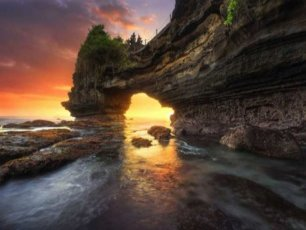
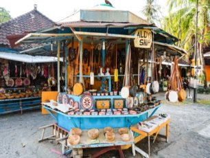
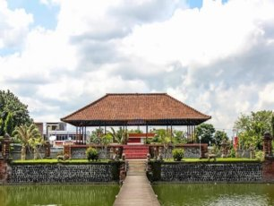

Tempat Wisata
di NTB
Berikut Tempat wisata
yang harus kalian kunjungi saat Berlibur di NTB.
Pantai Ampenan
Pantai Ampenan, Wisata Andalan Mataram Yang Sajikan Sunset Indah#1 Dari bagian utara hingga selatan, Pulau Lombok mempunyai keindangan pantai dengan kekhasannya masing-masing.Bahkan, di pusat kota Lombok, Mataram, Anda bisa melihat keindahan pantai sembari bercengkerama dengan keluarga atau teman.
Pura Batu Bolong Lombok
Pura Batu Bolong Lombok, Tak Kalah Dari Batu Bolong Tabanan#2 Pura Batu Bolong Lombok terletak di atas batu hitam besar yang berlubang di tengahnya. Deburan ombak yang cukup kencang menambah eksotisme Pura yang berhadapan dengan Selat Lombok ini.
Pantai Senggigi
Pantai Senggigi, Pantai Terindah di Mataram#3 Pantai Senggigi, adalah suatu nama yang diambil dari Nama seorang Putri dalam legenda rakyat Lombok. Pantai ini merupakan suatu kawasan utama wisatawan di Lombok yang pengembangan dimulai di awal tahun 1980.
Pasar Seni
Pasar Seni Senggigi, Pusat Oleh-oleh Kesenian Khas Lombok di Pinggir Pantai#4 Pantai Senggigi merupakan wisata di Lombok yang populer di kalangan wisatawan, baik lokal maupun mancanegara. Pesonanya tak pernah pudar walaupun bersaing dengan wisata baru lainnya. Selain bermain di pantai, Teman Traveler juga dapat mengunjungi pasar seni di sekitar pantai. Namanya Pasar Seni Senggigi yang menjual khusus barang-barang seni khas Lombok.
Museum NTB
Menambah Wawasan di Museum Negeri Nusa Tenggara Barat, Lombok#5 Di Lombok, ada sebuah tempat yang menyimpan sejarah, lengkap dengan benda-benda peninggalan, masyarakat Nusa Tenggara Barat (NTB). Museum Negeri Nusa Tenggara Barat namanya. Dilengkapi dengan koleksi yang bersejarah, museum ini menjadi tempat yang tepat bagi Anda yang menyukai sejarah dan cerita di baliknya.
Kota Tua Ampenan
Kota Tua Ampenan, Wisata Bersejarah di Mataram yang Sayang untuk Dilewatkan#6 Lombok memiliki banyak destinasi wisata yang Teman Traveler bisa kunjungi. Ada pantai, air terjun bahkan destinasi wisata sejarah. Salah satunya Kota Tua Ampenan di Mataramyang lokasinya sangat dekat dengan pantai. Sejak zaman Belanda, Ampenan merupakan daerah sibuk dengan aktivitas pelabuhan, pelayaran, perdagangan. Hal tersebut pula yang membuat kawasan ini sayang untuk dilewatkan.
Taman Mayura
Tempat Wisata Sejarah Yang Indah#7 Sama halnya seperti Bali, Lombok juga mempunyai wisata sejarah yang menarik untuk dikunjungi oleh wisatawan baik lokal maupun mancanegara. Salah satu tempat wisata sejarah tersebut yaitu Taman Mayura yang berada di Kawasan Lombok Barat, tepatnya di kawasan Kecamatan Cakranegara. Objek wisata ini menawarkan wisata sejarah dan religi dengan pemandangan alam yang tentunya juga memukau wisatawan.
Taman Sangkareang
Cantiknya Taman Sangkareang Lombok, Penuh Spot Selfie#8 Taman Sangkareang merupakan salah satu detinasi wisata menarik di wilayah Lombok. Teman Traveler bisa menemukan berbagai macam hiburan, mulai dari permainan anak-anak sampai hiburan orang dewasa. Beberapa sudutnya juga dipadati spot selfie.
Taman Narmada
Taman Narmada, Lokasi Air Awet Muda Dari Zaman Kerajaan#9 Taman Narmada merupakan taman air peninggalan kerajaan, yang dikenal sebagai kolam pemandian raja. Objek wisata ini merupakan wisata spesial yang terlihat berbeda, diantara obyek liburan yang ada di pulau ini, yang umumnya berhubungan dengan pantai dan laut.
Recent
Projects
Praesent pellentesque efficitur magna,
sed pellentesque neque malesuada vitae.
{kind=link}
{kind=link}
{kind=link}
{kind=link}
Skills
HTML
CSS
Java
Java Script
PHP
Blog
Entries
Saya baru memposting blog saya di blogger pada tahun 2019.
Berikut adalah beberapa blog saya.
-
PERANGKAT LUNAK SISTEM
15 Desember 2019PPT.
-
PERANGKAT LUNAK SISTEM
15 Desember 2019WORD.
-
Pantai Ampenan
5 November 2020Jika mengunjungi Kota Mataram di Lombok, Nusa Tenggara Barat, rasanya kurang lengkap tanpa mengunjungi kota tua Ampenan.Kota tua Ampenan tempatnya para wisatawan untuk menikmati arsitektur dengan gaya zaman dahulu, masa Hindia-Belanda. Para pemilik bangunan tersebut enggan mengganti dengan model modern untuk melestarikan wilayah tersebut.
-

Pura Batu Bolong
5 November 2020Lokasi Pura Batu Bolong berada pada salah satu situs geologi pantai Batu Klayar. Sebuah pantai di selatan pantai Senggigi dengan teluk yang terbentuk dari batuan lava andesit-basalan. Lava itu warisan dari situs geologi kawasan Geopark Rinjani Lombok.
-
Pantai Sengigi
5 November 2020Pantai Senggigi, adalah suatu nama yang diambil dari Nama seorang Putri dalam legenda rakyat Lombok. Pantai ini merupakan suatu kawasan utama wisatawan di Lombok yang pengembangan dimulai di awal tahun 1980.
-

Pasar Seni
5 November 2020Pantai Senggigi merupakan wisata di Lombok yang populer di kalangan wisatawan, baik lokal maupun mancanegara. Pesonanya tak pernah pudar walaupun bersaing dengan wisata baru lainnya. Selain bermain di pantai, Teman Traveler juga dapat mengunjungi pasar seni di sekitar pantai. Namanya Pasar Seni Senggigi yang menjual khusus barang-barang seni khas Lombok.
-
Museum NTB
5 November 2020NDi Lombok, ada sebuah tempat yang menyimpan sejarah, lengkap dengan benda-benda peninggalan, masyarakat Nusa Tenggara Barat (NTB). Museum Negeri Nusa Tenggara Barat namanya. Dilengkapi dengan koleksi yang bersejarah, museum ini menjadi tempat yang tepat bagi Anda yang menyukai sejarah dan cerita di baliknya.
-
Kota Tua Ampenan
5 November 2020Lombok memiliki banyak destinasi wisata yang Teman Traveler bisa kunjungi. Ada pantai, air terjun bahkan destinasi wisata sejarah. Salah satunya Kota Tua Ampenan di Mataram yang lokasinya sangat dekat dengan pantai. Sejak zaman Belanda, Ampenan merupakan daerah sibuk dengan aktivitas pelabuhan, pelayaran, perdagangan. Hal tersebut pula yang membuat kawasan ini sayang untuk dilewatkan.
Taman Mayura
5 November 2020Sama halnya seperti Bali, Lombok juga mempunyai wisata sejarah yang menarik untuk dikunjungi oleh wisatawan baik lokal maupun mancanegara. Salah satu tempat wisata sejarah tersebut yaitu Taman Mayura yang berada di Kawasan Lombok Barat, tepatnya di kawasan Kecamatan Cakranegara. Objek wisata ini menawarkan wisata sejarah dan religi dengan pemandangan alam yang tentunya juga memukau wisatawan.
Taman Sangkareang
5 November 2020Banyak tempat wisata di Lombok yang harus Teman-teman kunjungi saat berkunjung ke sini seperti pantai, air terjun, bukit, dan tempat wisata lainnya. Salah satu tempat yang tidak boleh dilewatkan oleh Teman-teman adalah Taman Sangkareang.
Taman Narmada
5 November 2020Taman Narmada merupakan taman air peninggalan kerajaan, yang dikenal sebagai kolam pemandian raja. Objek wisata ini merupakan wisata spesial yang terlihat berbeda, diantara obyek liburan yang ada di pulau ini, yang umumnya berhubungan dengan pantai dan laut.